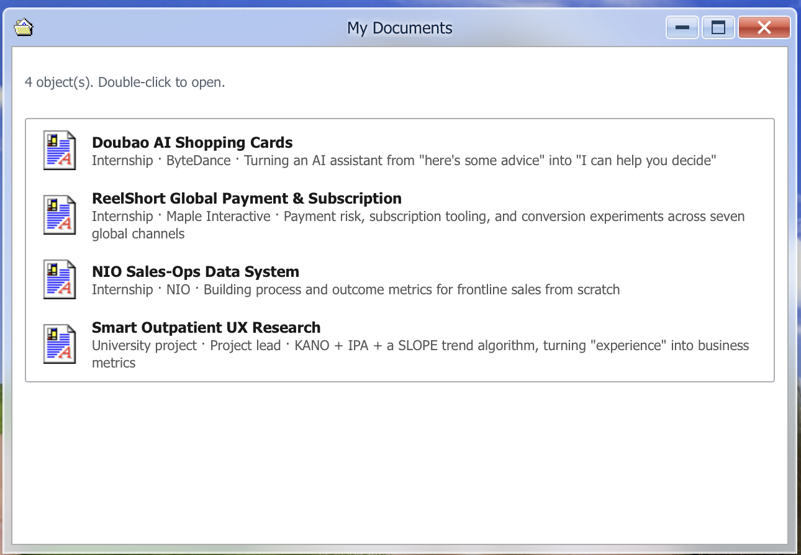
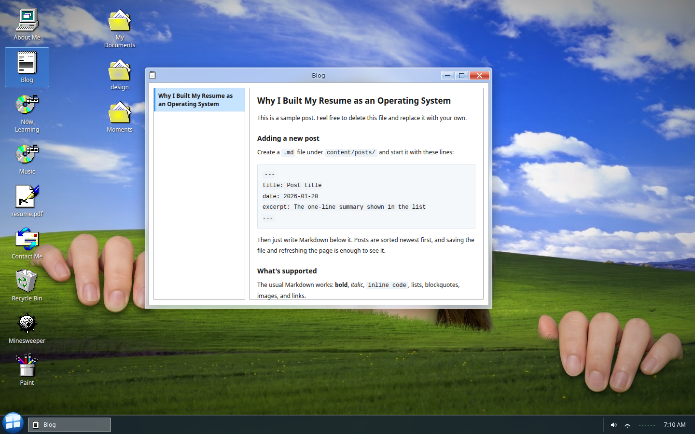

77-OS · Product Portfolio Case Study
03 / 08
First five seconds
A skippable XP-style boot animation, then a login screen that only ever asks you to click one name.
Fig. 01
BootAuto-advances in 3.2s, or tap Skip — never blocks a returning visitor
Fig. 02
LoginOne click on Guest fades to black, then into the desktop
Jiaqi Huang
systemStore.ts — boot → login → desktop → shutdown
77-OS · Product Portfolio Case Study
04 / 08
A desktop that behaves like one
Fig. 03
Fig. 04
01Drag, resize, minimize, maximize, close — real window mechanics
02Focus, z-index, and dragging all read from one windowStore
03Cursor shape locks mid-drag so it never flickers back to the system arrow
Jiaqi Huang
windowStore.ts — open / focus / minimize / z-index
77-OS · Product Portfolio Case Study
05 / 08
The résumé lives inside the OS
"My Documents" isn't a mock folder. Double-clicking a project opens the real write-up — ByteDance's Doubao shopping cards, ReelShort global payments, NIO sales ops, plus a university UX study — each with the actual numbers.
Fig. 05

My DocumentsThree real internships, one line each
Fig. 06
Project detailFull write-up, metrics included
Fig. 07

BlogMarkdown files in content/posts/, sorted by date
Jiaqi Huang
content/site.ts — one file drives every window
77-OS · Product Portfolio Case Study
06 / 08
Details most people won't consciously notice
Fig. 08
Icons and cursors are restored bitmaps, not new art — but every hotspot was hand-recalculated so switching cursor shapes never makes the pointer visibly jump.


Jiaqi Huang
--glass-* / --cur-* tokens in globals.css
77-OS · Product Portfolio Case Study
08 / 08
Try it
yourself
Live site77-os.vercel.app
Email1697429486@qq.com
Fig. 09
One more thingThere's a fully working Minesweeper in there too — you can actually win it.
Jiaqi Huang
Next.js 16 · Hand-written CSS